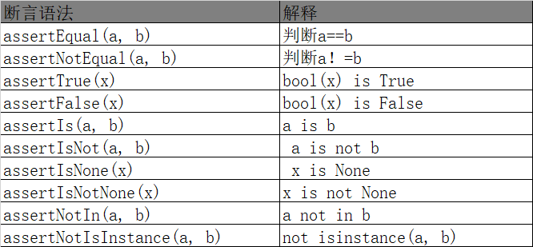
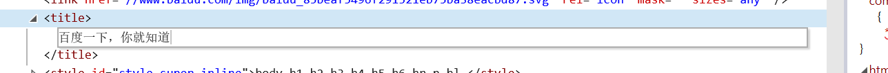
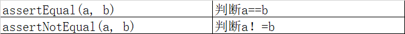
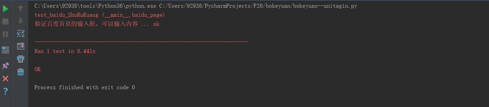
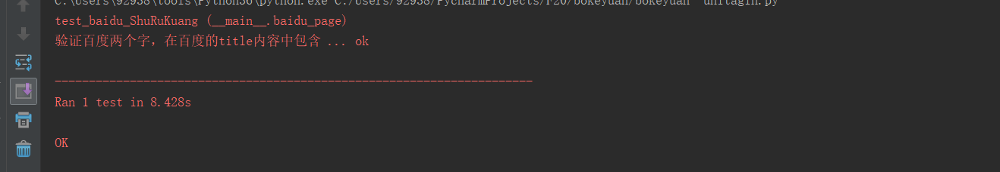

unittest中的测试断言分两天总结，hhh其实内容不多，就是懒~
断言的作用是什么？ 答：设置测试断言以后，能帮助我们判断测试用例执行结果。
我们先看下unittest支持的断言有哪些：

对上面的断言语法有个大概的了解后，我们使用一下看看代码：
一：
断言 assertEqual(a,b) 它可以判断两个参数相等，比如我们把获取到的百度首页的title和我们写的title做对比。 1 '''
2 标题 断言 assertEqual() 它可以判断两个参数相等，比如我们把获取到的百度首页的title和我们写的title做对比。
3 '''
4 import unittest
5 from bokeyuan.bokeyuan_public import *
6
7 class baidu_page(public_baidu): #继承了另一个.py模块中的public_baidu类，这个类继承了TestCase
8 '''
9 因为继承了自己另一个.py模块中的类public_baidu，所以不需要在写setup和teardown两个测试固件的方法。
10 '''
11 '''直接写用例'''
12 def test_baidu_title(self): #只要是用例，函数名字开头必须是test_ 不然不会被识别成用例的！！
13 print('获取到的title是：',self.driver.title) #我们打印获取到的title内容
14 self.assertEqual(self.driver.title,'百度一下，你就知道') #第二个参数是我们自己写的需要校验的内容哦
15
16 @staticmethod
17 def suite(self):
18 unittest.TestSuite(unittest.makeSuite(baidu_page))
19 return suite #一定要返回结果给调用方
20 if __name__ == '__main__':
21 unittest.main(verbosity=2).run(baidu_page.suite()) #把baidu_page类中的案例，传入到测试套件中suite()，suite()方法是被装饰了的，所以不需要实例化可以直接类名调用
注意：相等，必须是内容和类型都完全相等哦，比如 str('1') 和 int(1) 这两个1内容是一样的，但是他们的数据类型可不是一样的，所以不会是相等的哦！字符串和数据类型是两个类型哦~！！！ 相等的两个含义你学会了吗？
那么assertNotEqual(a,b) 代表的是不相等，你可以举一反三写出小的案例吗？ 题目：判断一下 3不等4

不会的朋友可以留言，大家一起相互学习~~
二：assertTrue(x) 返回的是bool类型的数据，True大家都不陌生，真真为真，真假为假，假假为假~~
我们看个小案例，我判断一下百度首页的输入框是可以输入内容，如果可以编辑，那么bool值肯定就是真（True）~~
备注：
so.is_enabled() 作用是检查元素是否可以编辑 如文本框
1 '''
2 标题 断言 assertTrue() 它返回的是Ture，也就是条件为真，就是通过了~~真真为真
3 '''
4 import unittest
5 from bokeyuan.bokeyuan_public import *
6
7 class baidu_page(public_baidu): #继承了另一个.py模块中的public_baidu类，这个类继承了TestCase
8 '''
9 因为继承了自己另一个.py模块中的类public_baidu，所以不需要在写setup和teardown两个测试固件的方法。
10 '''
11 '''直接写用例'''
12 def test_baidu_ShuRuKuang(self): #只要是用例，函数名字开头必须是test_ 不然不会被识别成用例的！！
13 '''验证百度首页的输入框，可以输入内容'''
14 so = self.driver.find_element_by_id('kw')
15 self.assertTrue(so.is_enabled()) #它 so.is_enabled() 作用是检查元素是否可以编辑 如文本框
16
17 @staticmethod
18 def suite(self):
19 unittest.TestSuite(unittest.makeSuite(baidu_page))
20 return suite #一定要返回结果给调用方
21 if __name__ == '__main__':
22 unittest.main(verbosity=2).run(baidu_page.suite()) #把baidu_page类中的案例，传入到测试套件中suite()，suite()方法是被装饰了的，所以不需要实例化可以直接类名调用
可以看到案例是ok，表示通过，说明是可以编辑的，通过案例你会使用assertTrue(x) 了吗？是不是认识了呢？
同样的assertFalse() 代表假，你可以用它判断一下 3等于4 吗？ 如果你不会写 那么留言哦~~大家一起学习
三、aeertIn(a，b) 代表 a是不是在b里面，或者被b所包含。我们看下代码示例：
1 '''
2 标题 断言 assertIn(a,b) 代表a是不是被b所包含，a是不是在b里面
3 '''
4 import unittest
5 from bokeyuan.bokeyuan_public import *
6
7 class baidu_page(public_baidu): #继承了另一个.py模块中的public_baidu类，这个类继承了TestCase
8 '''
9 因为继承了自己另一个.py模块中的类public_baidu，所以不需要在写setup和teardown两个测试固件的方法。
10 '''
11 '''直接写用例'''
12 def test_baidu_ShuRuKuang(self): #只要是用例，函数名字开头必须是test_ 不然不会被识别成用例的！！
13 '''验证百度两个字，在百度的title内容中包含'''
14 self.assertIn('百度',self.driver.title)
15
16 @staticmethod
17 def suite(self):
18 unittest.TestSuite(unittest.makeSuite(baidu_page))
19 return suite #一定要返回结果给调用方
20 if __name__ == '__main__':
21 unittest.main(verbosity=2).run(baidu_page.suite()) #把baidu_page类中的案例，传入到测试套件中suite()，suite()方法是被装饰了的，所以不需要实例化可以直接类名调用
同样的方法，你能有可以用assertIsNot(a, b) 代表a不在b中包含。写一个小案例吗？题目： 字符串 ’b‘ 不在 字符串 ’acc‘ 中包含
今天的内容就是这么多了，其实常用的断言（assert）方法就是这三种，其他的也会用到，但是不要贪，先学会这三种以及相反的三种，就是六种了~~棒~~~
不会的朋友，可以留言，大家一起学习~